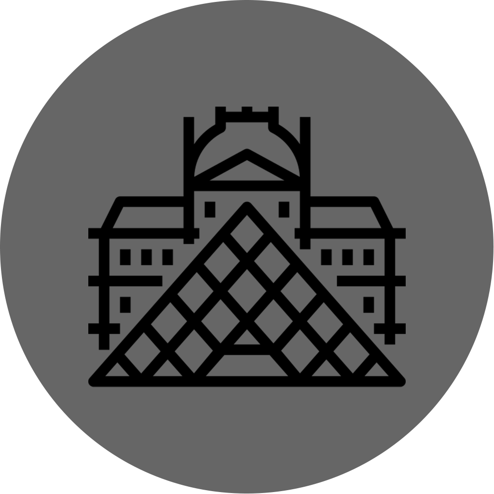
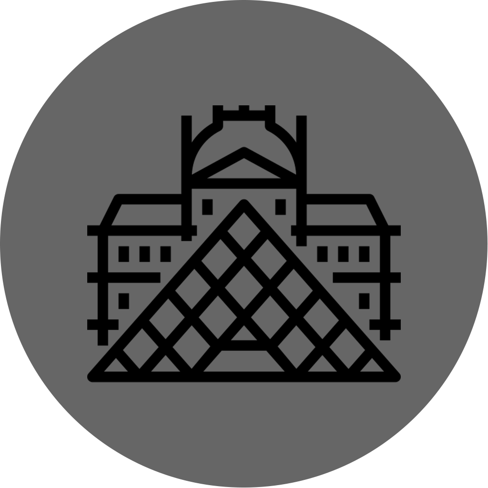

La cathédrale Notre-Dame de Paris est un chef-d'œuvre de l'architecture gothique datant du Moyen Âge. Elle se situe sur l'île de la Cité, au cœur de Paris, et a été construite entre 1163 et 1345. La cathédrale est célèbre pour ses magnifiques vitraux, ses sculptures et sa façade ornée de statues. Elle est également connue pour son clocher, le fameux «beffroi», qui offre une vue panoramique imprenable sur la ville. La cathédrale Notre-Dame est un lieu de culte important pour les catholiques, mais elle est également un lieu de pèlerinage pour les touristes du monde entier.
Sainte Chapelle
Accès :
Accès situation de handicap :
La Sainte-Chapelle est un bâtiment religieux situé à Paris, sur l'île de la Cité. Elle a été construite au XIIIe siècle pour abriter les reliques les plus sacrées de la chrétienté, dont la couronne d'épines du Christ. La Sainte-Chapelle est un exemple remarquable de l'architecture gothique, avec ses hautes voûtes en ogives, ses murs ornés de vitraux colorés et ses statues de saints. Elle est surtout connue pour ses 15 fenêtres en verre coloré qui représentent des scènes de la Bible. La Sainte-Chapelle est un lieu de culte catholique, mais elle est également ouverte au public pour les visites.
La Tour Eiffel est l'un des monuments les plus célèbres et les plus emblématiques de Paris. Elle a été construite pour l'Exposition Universelle de 1889 et mesure 324 mètres de haut. La Tour Eiffel est devenue l'emblème de la France et de Paris, attirant des millions de visiteurs chaque année. Elle est ouverte au public, offrant des vues panoramiques sur la ville depuis ses trois plateformes d'observation. La tour Eiffel est également un lieu de divertissement populaire, avec des restaurants, des bars et des expositions. Elle est illuminée la nuit, offrant un spectacle époustouflant pour les visiteurs. La tour Eiffel est un symbole incontournable de l'architecture mondiale.
Tour Eiffel
Accès :
Accès situation de handicap :
Le Palais de Chaillot est un bâtiment situé sur la place du Trocadéro, dans le 16ème arrondissement de Paris. Il a été construit pour l'Exposition Universelle de 1937, sur l'emplacement de l'ancien Palais du Trocadéro. Il est un exemple remarquable de l'architecture Art déco, avec son style élégant et sa terrasse offrant des vues panoramiques imprenables sur la ville, notamment sur la Tour Eiffel. Le Palais de Chaillot abrite plusieurs institutions culturelles telles que le Musée de l'Homme, qui explore les sciences humaines et les cultures, et le Théâtre national de la Danse, qui présente des spectacles de danse contemporaine. Il est également un lieu de célébration pour les grandes manifestations culturelles et les fêtes nationales.


 



_(4).jpg)